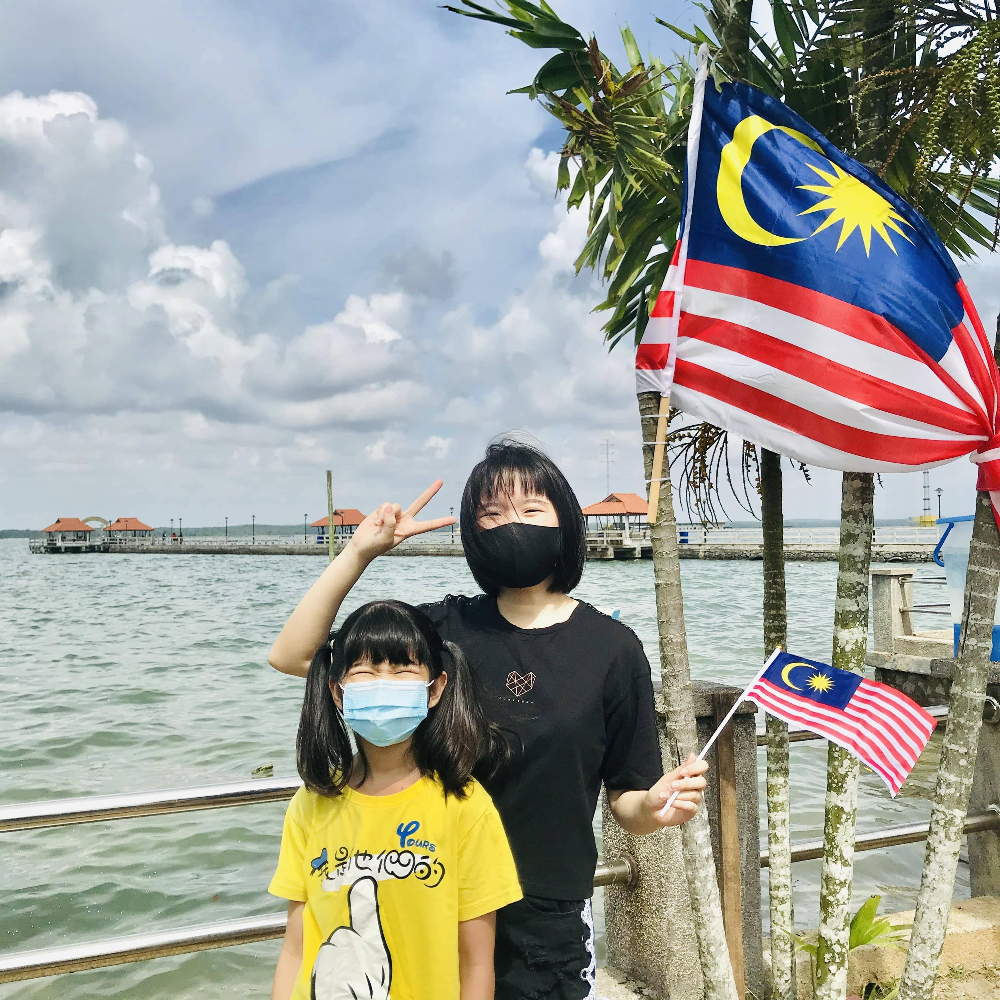
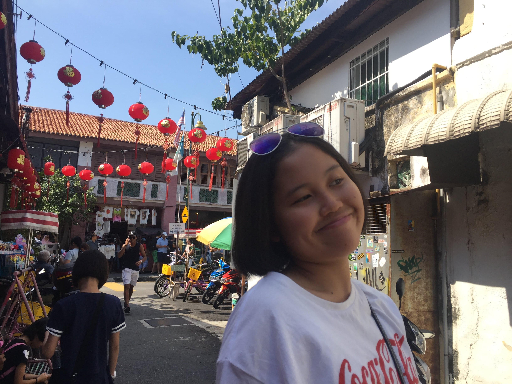
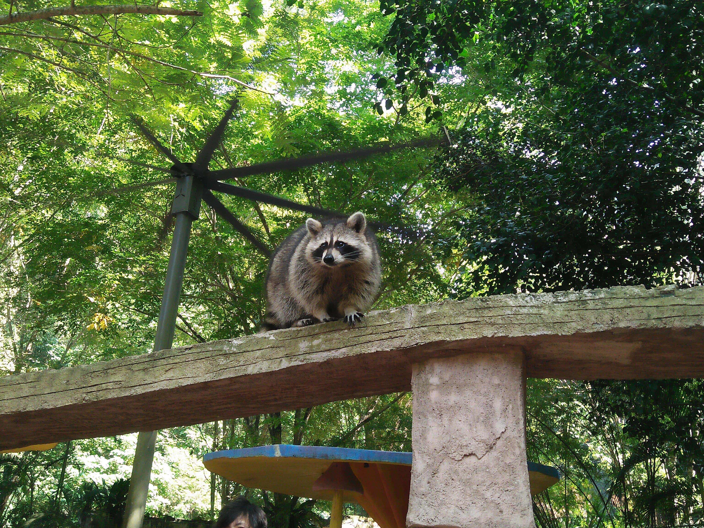
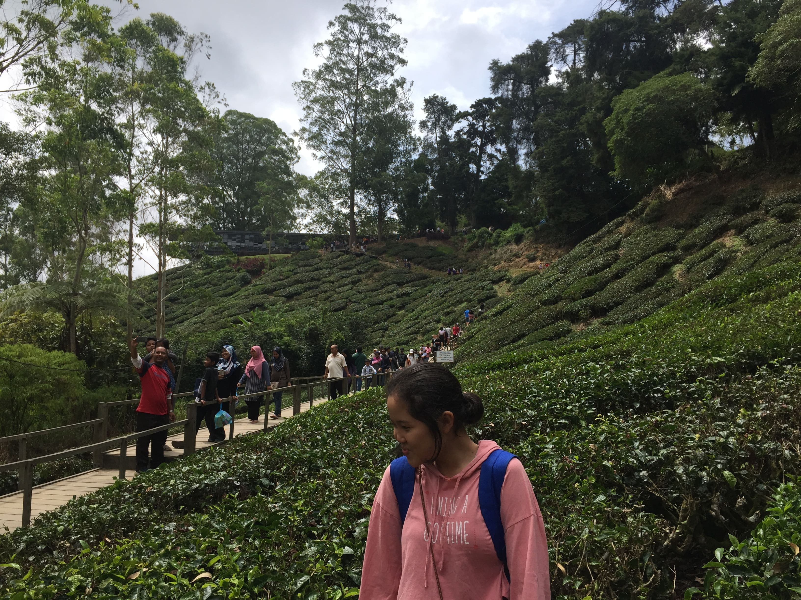
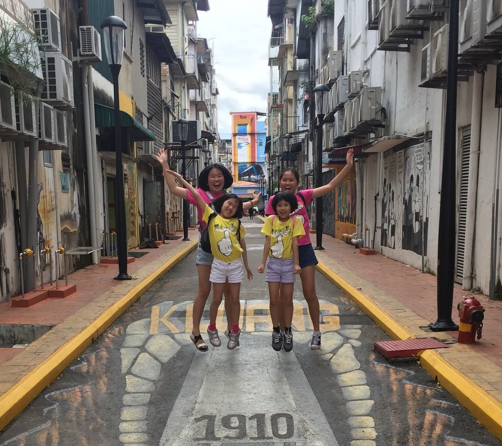

Selamat datang!
Malaysia is a multi-ethnic and multi-cultural country.
For your information, I am a typical Chinese girl from Malaysia.
Here I am going to introduce you some nice places in Malaysia that I have been to before...


George Town is the capital town of Penang. It's a beautiful place to travel. My family and I have been travelled to George Town two times. There are some must-go places in George Town, for example, wall art streets, Chew Jetty, Batu Feringgi,and Gurney Drive. Do you know that Penang is a food paradise...

Ipoh is a treasure place in Malaysia. Because of being surrounded by mountains, Ipoh is called as the "Mountain City"（山城）in Malaysia. I have been to some wonderful places in Ipoh, such as Lost World in Tambun, Gua Tempurung, the Kellie's Castle, and etc. My favourite place in Ipoh is Kampung Pasir Pinjir, as...

Malaysia is at the equator, so our weather is super hot all year round. However, the terrain of Malaysia is rugged, with mountains, rivers, oceans and swamps. So, we always go to some plateau areas to escape the heat. My family and I love Cameron Highland so much, living in Cameron Highland are chill and comfy, there are tea gardens and lavender...

Sabak Bernam is not a famous place to travel in Malaysia. However, I find this place as home, and I can find a sense of belonging here. In Sabak Bernam, there's a fishing village called Kampung Parit Baru. There is where my father was born and growing up. It's a beautiful place, as you can see, this photo was taken without any filter. When Chinese New Year is around the corner,we...

Kluang is a good place for a one-day trip. You can go there by car, but most people will choose to take the train for their trip. It is because the most famous place in Kluang is the Kluang Railway Coffee. It's located inside the Kluang Railway Station and still retains its original decor and old-world charm...

Most people find Cameron Highlands and Genting Highlands as their summer resort destinations. However, Fraser Hill is a good choice for escaping heat too. The most attractive place in Fraser Hill is their British colonial hill resort. I have been travelling to Fraser Hill when I was 12...